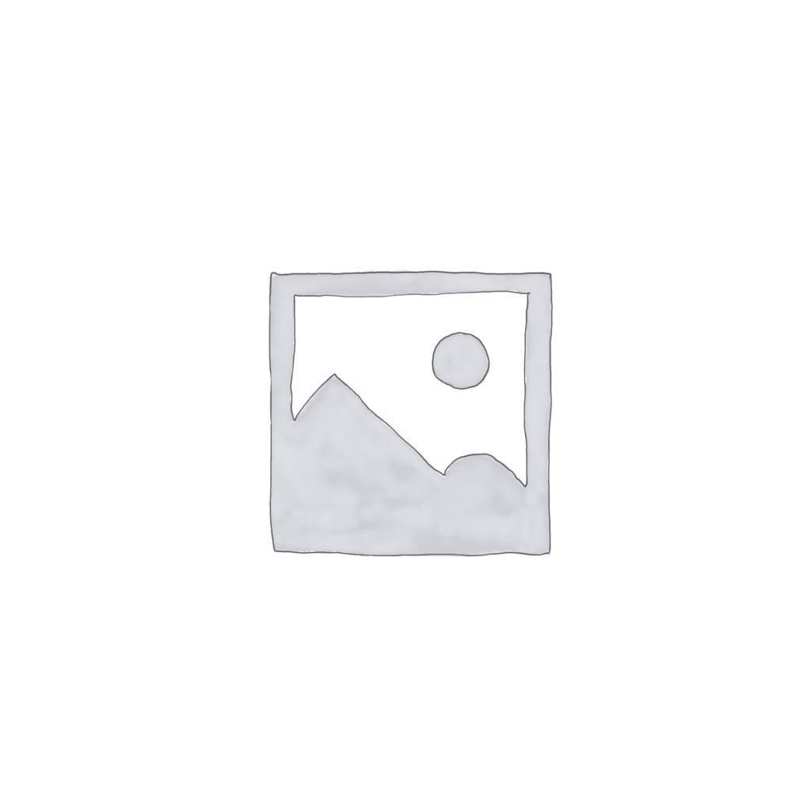

Waiting for Blue Journey...

Even though we have made great progress in understanding our own psychology and behaviour, we are still a long way away from learning the mystery that is our existence.
Pop Spiritual Project intends to create a new outlook on Pop Music by including a variety of sounds and rhythms that are unique to various cultures and countries. By doing this, we transform Pop Culture into a force that drives us to get in touch with our inner most roots, our history and goals and to search for connection, meaning and acceptance. This is called spirituality.
The creator of the project, Andrea Panzera believes that it is possible to provide a different way to approach Pop Music to different generations. She has been on a magical journey where she has collaborated with 2D and 3D artists from all over the world to develop this musical project.
The creator made an effort to assemble a variety of collaborators with diverse cultures and it is clearly apparent in the songs and images as the result.
This project draws inspiration from the historical philosophy of the Zen culture and Sufism as well as philosophers such as Gurdjieff, Lao Tzu and Krishnamurti.
Mantra
Sargam
Lost
Rumi
Jerusalem